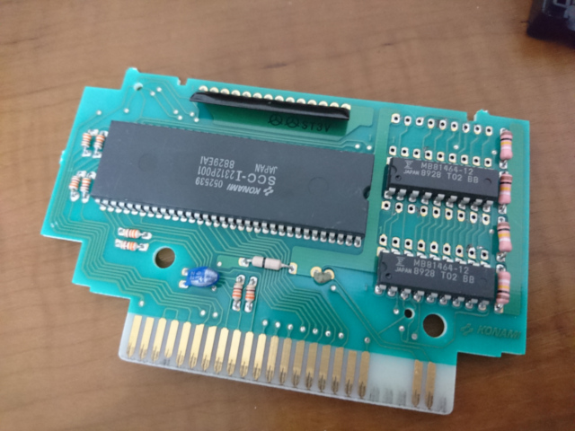
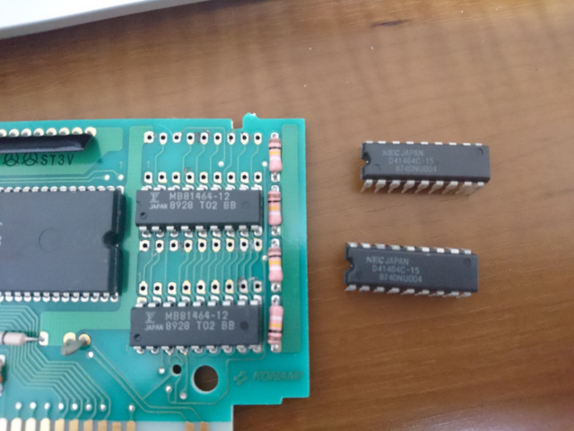
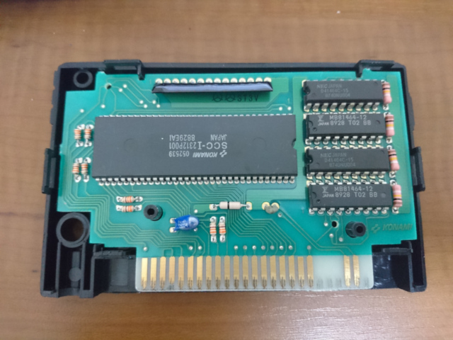

[前]

半田を取り除いた状態です。

ここに用意した DRAM を差し込みます。
元々ついているDRAMと同じ向き（切り欠きがSCC側に来るように取り付け）。
私が用意したのは、NEC D41464C-15 です。
15はおそらくアクセススピードで、元々付いてる 12 より遅いですが、MSX の 3.58MHz で考えると
１桁くらい速いので 15nsec でも問題ないと見越して、このまま取り付けました。
実際、問題ありませんでした。
基板が少し焦げてますが、初めて使ったシュッ太郎で焦がしてしまいました。
シュッ太郎に標準添付されている先端チップは、このパターンに対しては少し太いので、
もしかするともう少し細い先端チップに交換してトライするとやりやすいかもしれません。

普通に半田付けします。
[次]